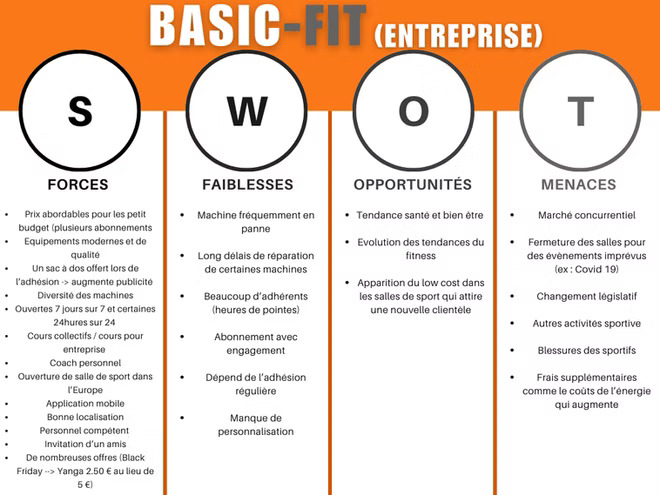
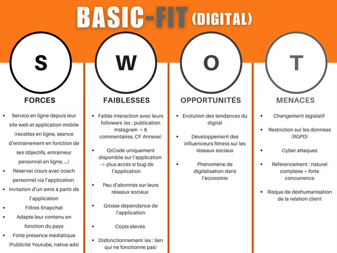
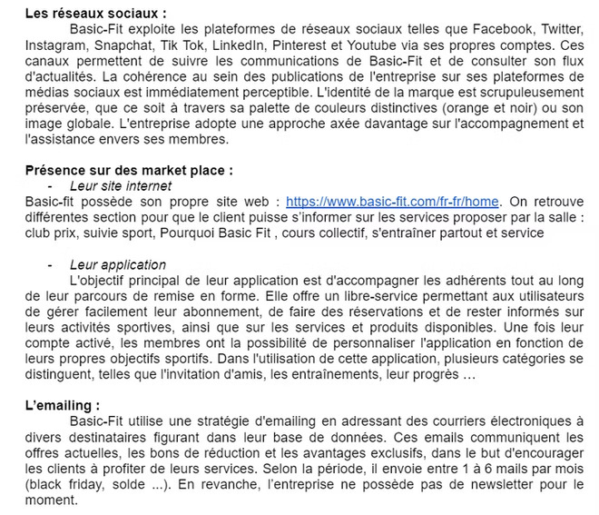
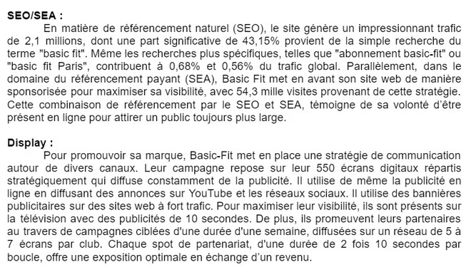
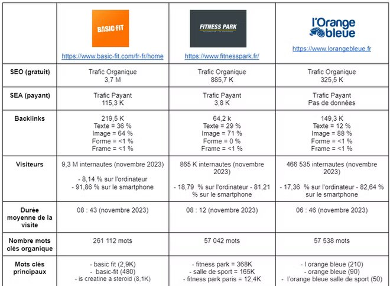

Marketing digital
Après avoir choisi ma spécialisation dans le parcours marketing digital, e-business et entrepreneuriat, j'ai pu suivre des cours spécifique au marketing digital.
Tout d'abord, j'ai pu suivre des cours de marketing digital. J'ai donc par exemple pu apprendre des termes techniques tel outbound et l'inbound, la matrice SMART, ce qu'est une licorne (start up valorisée à plus à plus d’un milliard de dollars, posséder un siège social en France et ne pas être côté en bourse. mettre en audit stratégique et benchmark concurrentiel et les différentes étapes pour mettre correctement en place ces deux outils.
Une fois ces bases apprises, j'ai pu les appliquer durant notre première SAE de cette deuxième année d'étude. Nous avions pour mission, par groupe de 4 à 5 personnes, d'analyser l'entreprise Basic-Fit sur son marché ainsi que sa présence digitale.
Pour réaliser cette mission, j'ai été à la charge de réaliser le SWOT de l'entreprise Basic-Fit ainsi que le SWOT de la présence digitale de Basic-Fit. Voici ces deux travaux :
 
Pour l’analyse de l’entreprise Basic-Fit, j'ai pu observer des forces majeures de l’entreprise, notamment les prix abordables des abonnements proposés, des équipements de qualité et divers, un grand nombre de salles dans toute l’Europe et bien localisé. Il est important pour Basic-Fit de prendre en compte des tendances que soit dans le monde de la fitness comme sur le bien être mais aussi de considérer leur place en tant que salle low-cost. En revanche, l’entreprise connaît de nombreuses panne de leurs machines et une réparation qui dure dans le temps. En vue de la forte demande, j'ai pu constater une forte affluence dans leurs salle de sport à certaines heures (10h, 14h, 16h, 18h, 19h) mais aussi un manque de personnalisation. De plus, les adhérents obtiennent un abonnement avec engagement sur un an, ce qui peut freiner l’achat et donc impacter les ventes de Basic-Fit. Les salles font face à un marché très concurrentiel et doivent donc se différencier de leurs concurrents pour attirer les consommateurs. Mais la salle peut être en difficultés dû à des changements de législation, à une fermeture inattendue, à des frais supplémentaires, etc. Les sportifs peuvent eux se blesser, donc ne pas pouvoir aller à la salle de sport, ou trouver une autre activité sportive.
Pour ce qui est de l'analyse digitale, j'ai pu remarquer que leur grande force est leur application/site internet, où l’on retrouve de nombreuses informations et de service (coach, invitation d’un ami …). Ils sont aussi très présent sur les médias comme les réseaux sociaux, où il adapte leur contenu en fonction de leur pays (ex : 5 comptes Instagram). Il serait judicieux pour Basic-Fit de prendre en compte l’évolution du digital dans leur stratégie (ex : influenceurs fitness), en vue d’une économie tournée aujourd’hui autour du digital. En revanche, on peut dire que l’entreprise est fortement dépendante de leur application (Qr Code, dysfonctionnement) et connaît une faible interaction avec les internautes qui sont déjà très peu à suivre leurs pages.
Après avoir réalisée cette analyse, je me suis occupée de réaliser l'audit de l'écosystème de Basic-Fit. En voici quelques extraits :
 
J'ai également contribuée à la réalisation du benchmark de l'entreprise Basic-Fit. Voici le tableau du benchmark auquel j'ai pu contribuer :
